Mykistä painamalla AirPodsia
Paina puhelun aikana kuulokkeen vartta kerran mykistääksesi ja uudelleen poistaaksesi mykistyksen. Toimii myös Chromessa, jossa Google Meet ja muut verkkopuhelut eivät reagoi AirPodsin painallukseen.
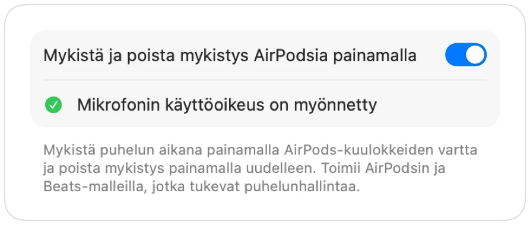
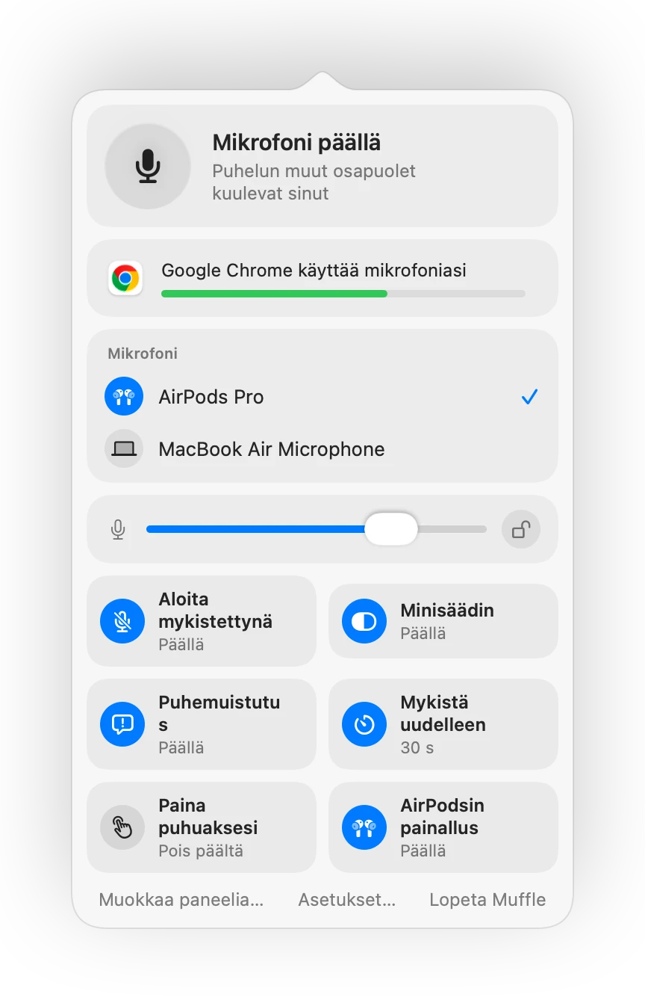
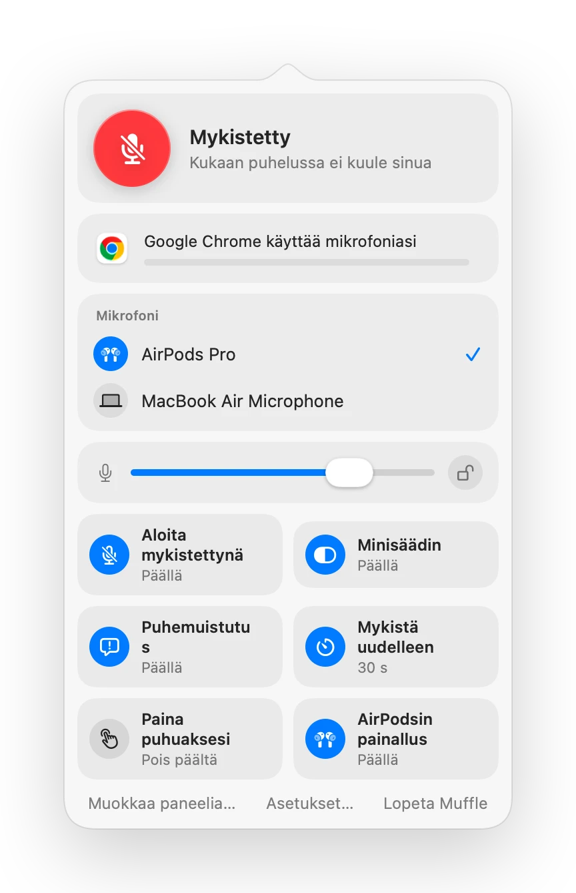
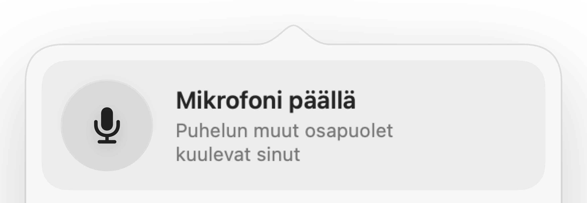
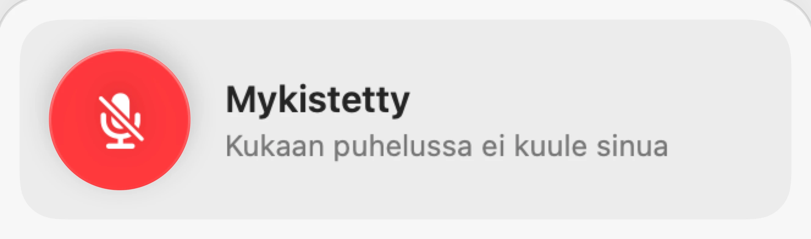
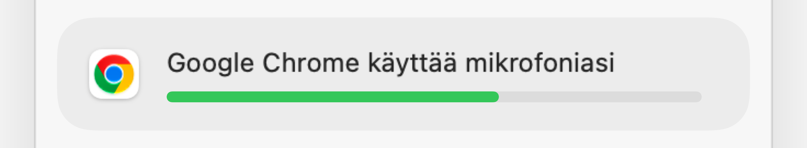
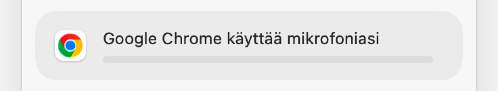
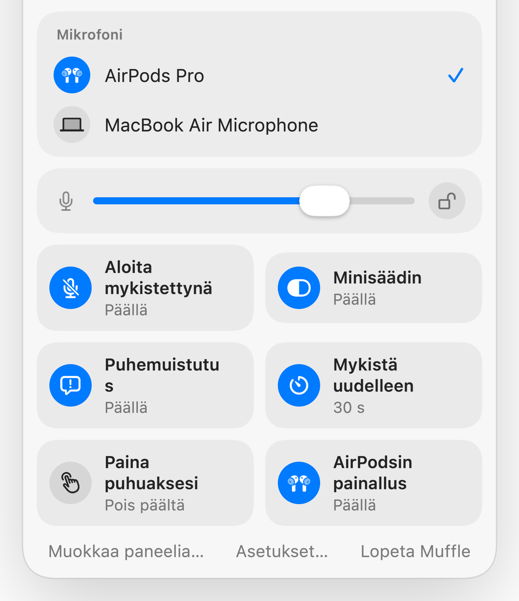
Muffle Macille
Paina AirPodsia tai yhtä pikanäppäintä. Muffle sammuttaa itse mikrofonin, joten Google Meet, Zoom, Teams, Slack ja kaikki muut sovellukset saavat pelkkää hiljaisuutta.
Ilmainen 3 päivän ajan. Sen jälkeen kertamaksu, ei tilausta. macOS 14 Sonomaan ja uudempiin.
Napsauta painiketta, paina AirPodsia tai käytä pikanäppäintä. Muffle sammuttaa itse mikrofonin, joten jokainen sovellus kuulee hiljaisuutta.
Mykistä, valitse mikrofoni, lukitse sen taso ja kytke ominaisuuksia päälle tai pois suoraan valikkoriviltä.
Macisi jokainen mikrofoni on heti saatavilla. Valitse yksi, ja jokainen sovellus seuraa perässä.
Chrome, Zoom ja Teams muuttavat mikrofonin tasoa itsestään. Lukitse se, niin Muffle palauttaa sen ennalleen.
Kytke ominaisuuksia päälle ja pois suoraan paneelista ja valitse, mitkä niistä näkyvät siellä.
Useimmat mykistyspainikkeet mykistävät vain yhden sovelluksen. Muffle sammuttaa itse mikrofonin, joten jokainen Macisi sovellus kuulee pelkkää hiljaisuutta.
Valitse valikkorivin kuvake: tavallinen, vihreä ja punainen tai pelkkä piste. Muffle voi käynnistyä Macisi kanssa.
Aloita jokainen puhelu mykistettynä, poista mykistys sen päättyessä, mykistä kun lukitset Macisi tai kun kuulokkeiden yhteys katkeaa.
Napauta vaihtaaksesi tilaa, pidä painettuna puhuaksesi tai pidä painettuna mykistääksesi. Lisää erilliset näppäimet mykistykselle ja sen poistolle tai puhenäppäin, kuten oikea optio-näppäin.
Valitse, mitä valikkorivipaneeli näyttää ja mitkä pikakytkimet sijaitsevat alareunassa.
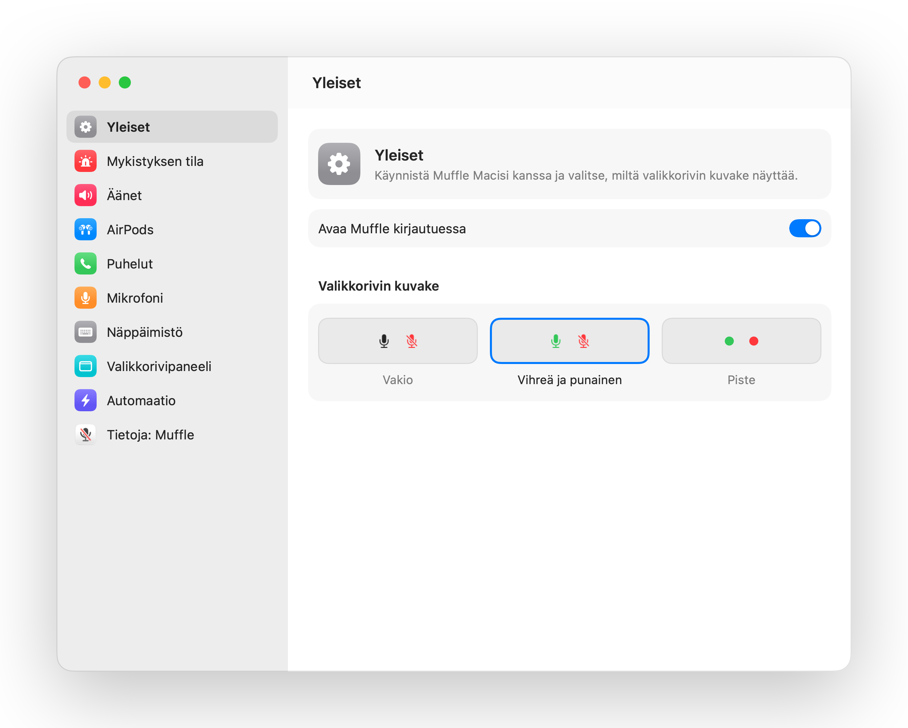
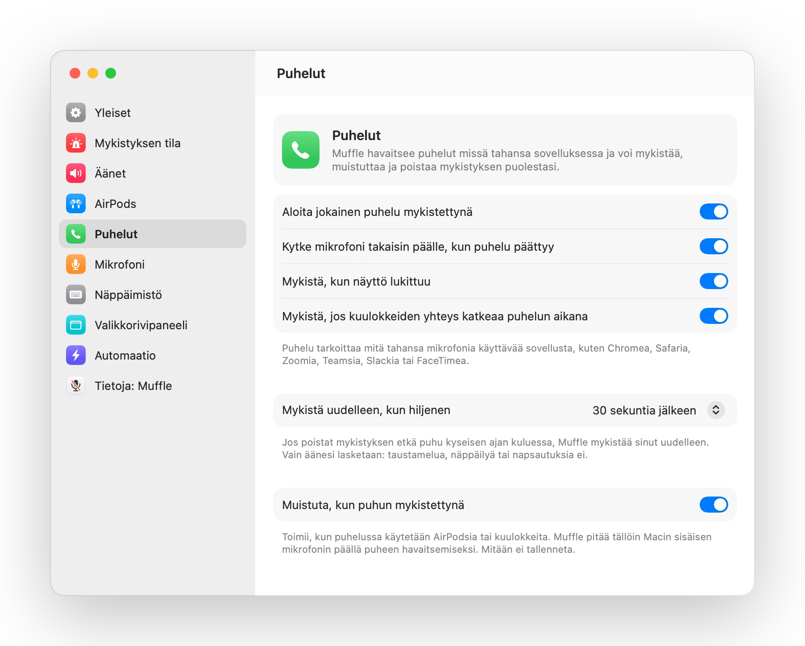
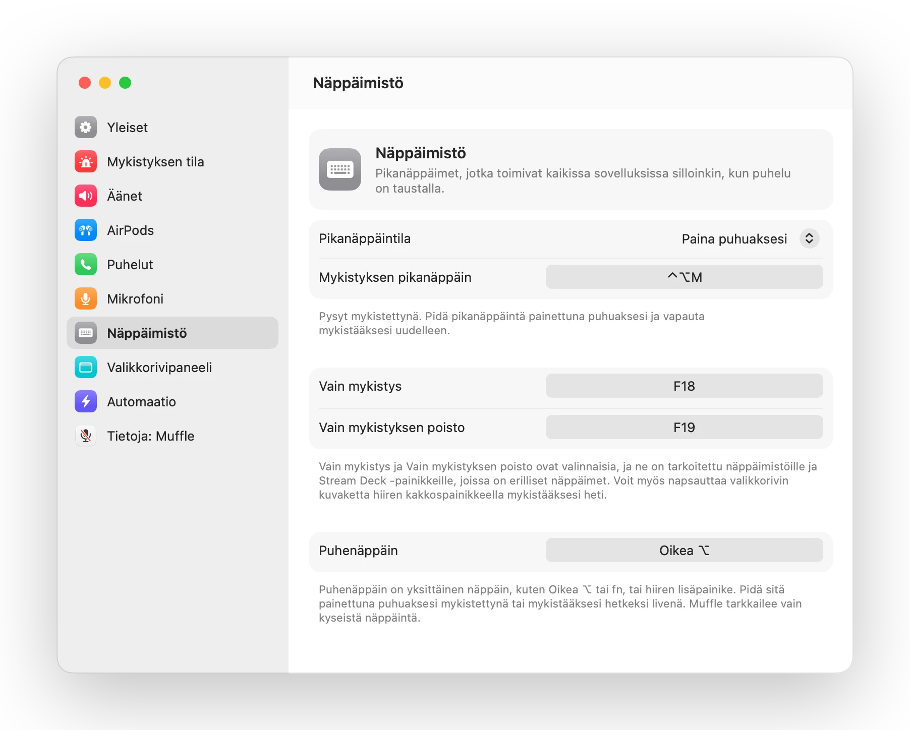
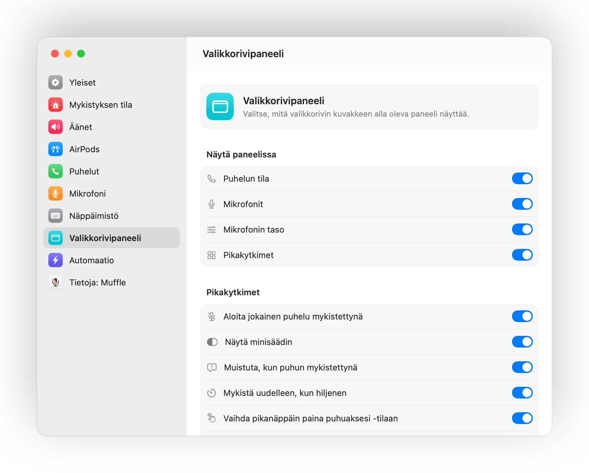
Paina puhelun aikana kuulokkeen vartta kerran mykistääksesi ja uudelleen poistaaksesi mykistyksen. Toimii myös Chromessa, jossa Google Meet ja muut verkkopuhelut eivät reagoi AirPodsin painallukseen.

Jos alat puhua mykistettynä, Muffle huomauttaa siitä ennen kuin selität koko asiasi tyhjille seinille.
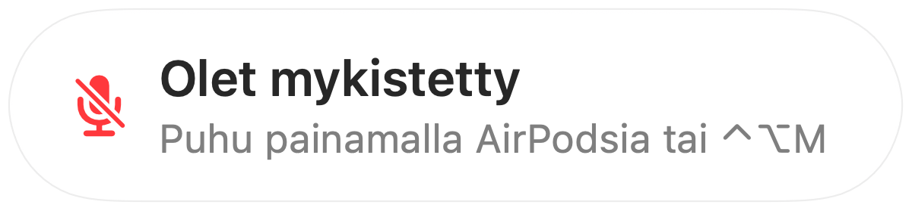
Control-Option-M mykistää sinut kaikkialla, vaikka puhelu olisi taustavälilehdellä. Pidä painettuna puhuaksesi mykistettynä ja vapauta mykistääksesi uudelleen.

Chrome, Zoom ja Teams muuttavat mikrofonin tasoa omin päin. Lukitse taso, niin Muffle palauttaa sen automaattisesti.

Pieni leijuva painike näyttää mikrofonin tilan puheluiden aikana. Napsauta sitä mykistääksesi tai poistaaksesi mykistyksen.
Valitse, miten pikanäppäin toimii: napauta vaihtaaksesi tilaa, pidä painettuna puhuaksesi tai pidä painettuna mykistääksesi yskän ajaksi. Lisää erilliset näppäimet mykistykselle ja sen poistolle tai pidä painettuna yhtä näppäintä, kuten Oikea ⌥ -näppäintä tai hiiren lisäpainiketta.
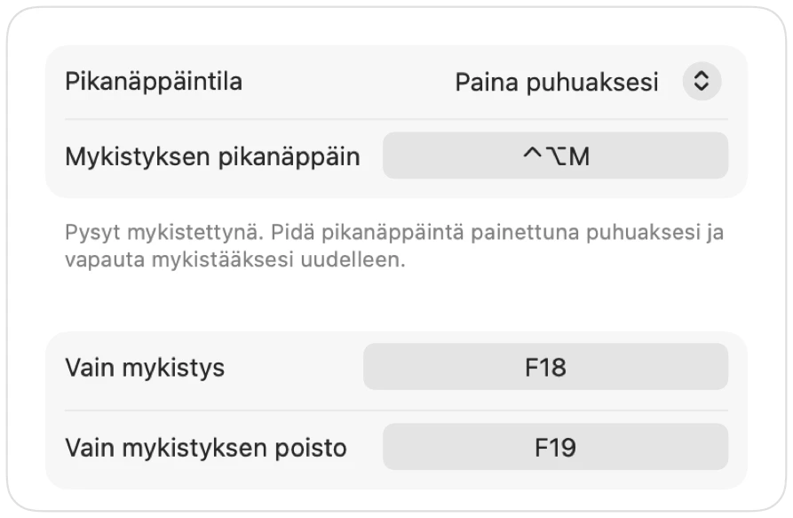
Poistitko mykistyksen sanoaksesi yhden asian? Jos olet sen jälkeen hiljaa valitsemasi ajan, Muffle mykistää sinut uudelleen. Vain äänesi lasketaan, ei näppäilyä tai taustamelua.
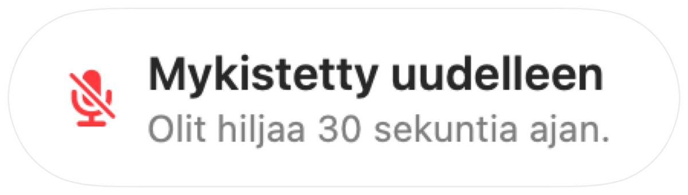
Kun käytät AirPods-kuulokkeita hiljaisessa huoneessa, Muffle ehdottaa Macin mikrofonia, jotta AirPods toistaa puhelun täydellä äänenlaadulla. Kun ympäristö muuttuu meluisaksi, se ehdottaa AirPodsin mikrofonia.

Aloita jokainen puhelu mykistettynä, kytke mikrofoni takaisin päälle puhelun päättyessä ja mykistä aina, kun lukitset Macisi.
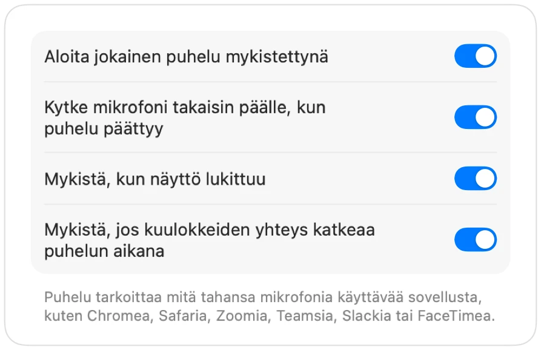
Jos kuulokkeiden yhteys katkeaa kesken puhelun, Muffle mykistää äänen ennen kuin puhelu siirtyy Macin mikrofoniin ja koko huoneen äänet kuuluvat.
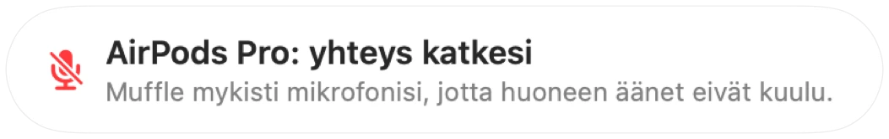
Mykistä Pikakomennot-sovelluksesta, Sirillä, Stream Deckillä, Raycastilla tai Ohjauskeskuksen painikkeella.
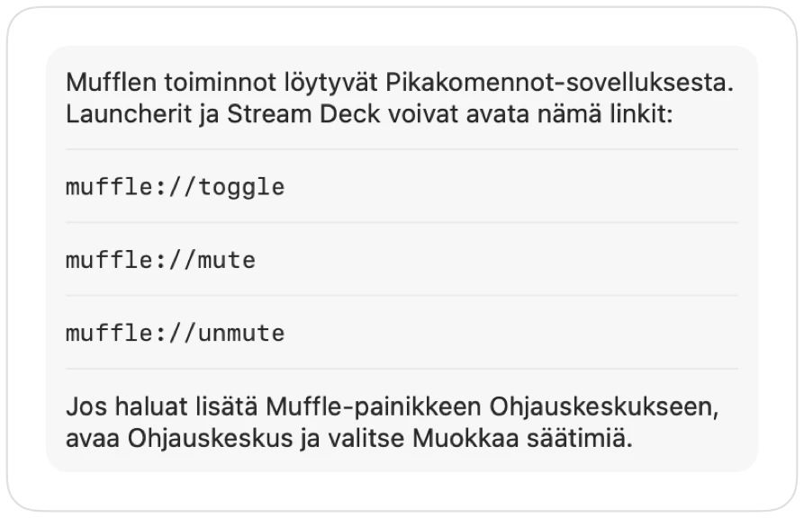
Vihreä tai punainen hehku näytön ympärillä, värillinen valikkorivin kuvake, kelluva painike ja ääni, jonka voit kytkeä pois päältä kullekin mikrofonille. Ota käyttöön haluamasi.
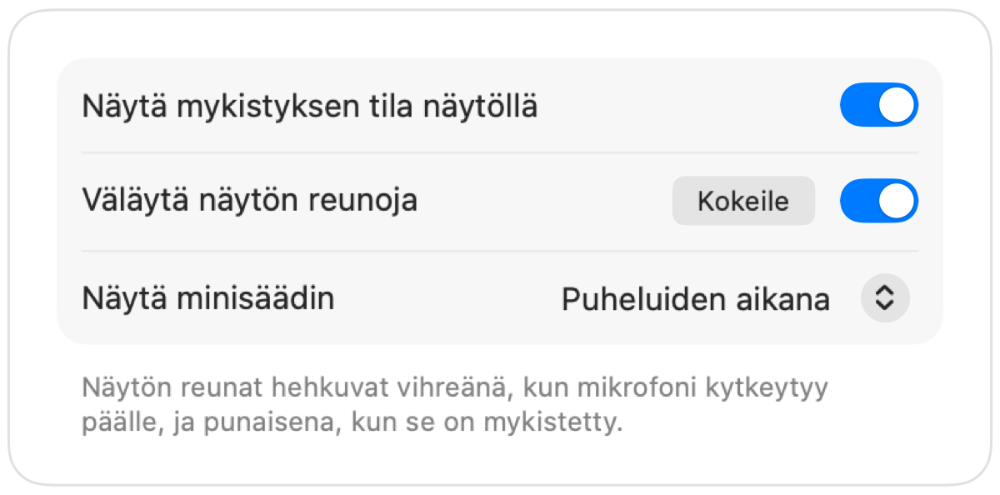
Muffle ei koskaan tallenna, säilytä tai lähetä ääntä. Se vain kytkee mikrofonin päälle ja pois sekä mittaa sen äänenvoimakkuutta. Ei käyttäjätilejä, ei analytiikkaa, ei seurantaa.
Asenna Muffle Mac App Storesta ja salli mikrofonin käyttöoikeus.
Liity puheluun missä tahansa sovelluksessa tuttuun tapaan.
Paina AirPodsia, paina Control-Option-M tai mykistä napsauttamalla valikkorivin kuvaketta.
Kyllä. Chrome ei välitä AirPodsin mykistyspainallusta verkkopuheluille, joten Muffle ottaa sen vastaan ja mykistää itse mikrofonin. Sama koskee kaikkia selainvälilehdissä käytäviä puheluita.
Puhelusovelluksesi saattaa edelleen näyttää mikrofonin olevan päällä, koska Muffle sammuttaa itse mikrofonin sovelluksen oman painikkeen sijaan. Muut kuulevat joka tapauksessa vain hiljaisuutta. Valikkorivin Muffle-kuvake muuttuu punaiseksi, kun olet mykistettynä.
AirPods Pro, AirPods 3 ja uudemmat sekä AirPods Max, samoin puhelunhallintaa tukevat Beats-mallit. Pikanäppäin ja valikkorivi toimivat minkä tahansa mikrofonin kanssa.
Kyllä. Muffle toimii kaikkien mikrofonia käyttävien Mac-sovellusten kanssa, niin työpöytäsovelluksissa kuin selainpuheluissakin.
Ei. Kokeile kaikkia ominaisuuksia ilmaiseksi 3 päivän ajan ja avaa Muffle sen jälkeen käyttöösi kertamaksulla.
macOS välittää AirPodsin painalluksen vain sovelluksille, jotka käyttävät mikrofonia, joten Muffle pitää puheluiden aikana äänettömän yhteyden auki. Mitään ei tallenneta.
Muffle kytkee mikrofonin takaisin päälle lopettaessaan, joten et koskaan jää jumiin mykistettynä.
macOS 14 Sonomaa ja uudempia. Ohjauskeskuksen painike vaatii macOS 26:n tai uudemman.
Kyllä. Valitse Asetuksista ”Paina puhuaksesi” ja pidä pikanäppäintä painettuna puhuaksesi. Voit myös pitää painettuna yhtä näppäintä, kuten Oikea ⌥ tai fn, tai hiiren lisäpainiketta.
Kun puhelu käyttää AirPodsin mikrofonia, AirPods siirtyy puhelutilaan, joka toistaa äänen heikommalla laadulla. Hiljaisessa huoneessa Muffle ehdottaa tilalle Macin mikrofonia, jolloin AirPods toistaa äänen edelleen täydellä laadulla.
Ei. Muffle tunnistaa puheen Applen laitteessa tehtävällä äänianalyysillä, joten vain puhuminen lasketaan. Näppäilyä, napsautuksia tai taustamelua ei lasketa, eikä mitään tallenneta.
Lyhyet, käytännölliset ohjeet mikrofonin mykistämiseen Macilla kaikissa sovelluksissa.
Voit kokeilla Mufflea ilmaiseksi 3 päivän ajan.